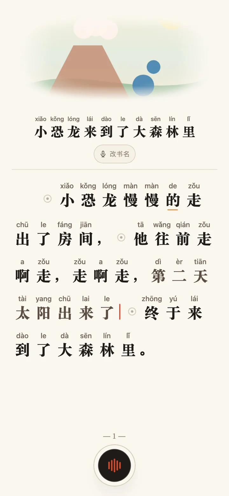

说话即成书，保留童声原味
无需键盘打字，离线自动标好注音与分段。点句子就回放孩子自己讲的那一句，顶部可从头到尾连播整本有声故事。
专为 6–8 岁孩子做的语音绘本与识字创作本。按下录音键说一句话，纸页上立刻长出带拼音的句子并完整保留孩子的原声；点任意词语进田字格认读，写完还能导出整本有声故事包。

手机阅读页：默认隐藏顶栏，整页留给故事与拼音，点空白呼出工具栏。
走出了 ， 终于来到了 。
故事主角词组，点击可收进「字词盒」，随时回听孩子自己的原声例句。
无需键盘打字，离线自动标好注音与分段。点句子就回放孩子自己讲的那一句，顶部可从头到尾连播整本有声故事。
内置离线语义分词，点击词语展示田字格、拼音、笔顺与同音字候选项；好词一键收进「字词盒」，按原声例句复习。
选一句就能语音发出「AI调整」指令（支持跨句联动修改），也能为故事画柔边水彩插画。所有改动进时光机，不满意随时撤回。
书架长按整本书，自动将保留句无缝拼接成一支干净的「完整录音.wav」，连同可打印带拼音图文 HTML 与 Markdown 打包分享。
书本、原声录音与时光机快照全部存在设备本地目录，不设强制登录，不上传云端做用户画像。
未配置 API 时全部写作、拼音、田字格与录音功能照常离线使用；在「家长设置」接入自有接口即可解锁 AI 能力。
内置 CNB 国内公开更新清单，启动静默检查新版本，家长在设置里点一下即可下载并覆盖升级。
支持 Android 8.0 及以上手机与平板。下载后直接点击安装即可（首次升级需允许浏览器安装未知应用）。